Prazo calculado
A data, com o corte das 16h e o feriado já na conta.
A pergunta central que movimentou o projeto
Hands On com IA da Avenue, 31/10/2026
UI e UX por Renan Chaves e Douglas Martins
Andre FujiwaraDouglas MartinsPaulo WerneckRenan ChavesVictorVictor Rosa
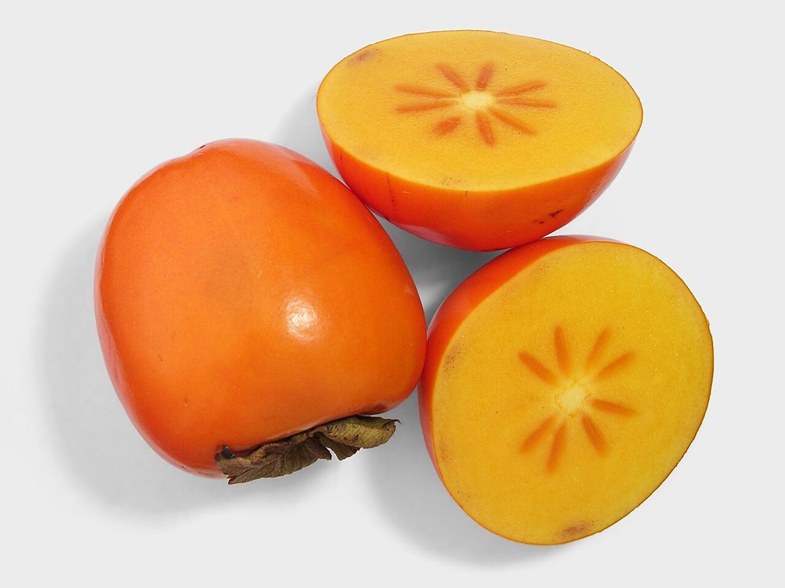
Vimos o elemento do caqui e escolhemos a semente.
Investimento é a semente que você planta hoje, para colher amanhã.
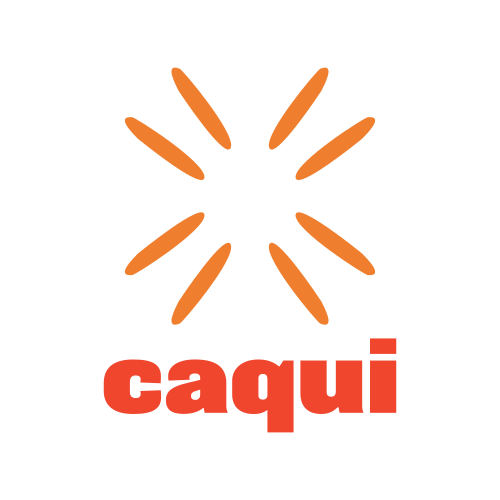
Quadrado, fundo claro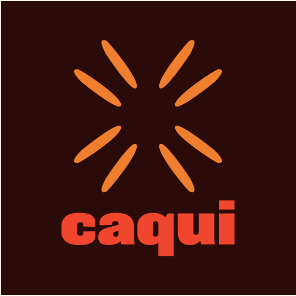
Quadrado, fundo escuro#2B0B09Texto e todo valor em dinheiro#FFF4E9Fundo e respiro#F6AC78O que pede atenção#E59F1CBorda da caixinha#2EDFF0Etapa atual do pedido#F0462EGolpe e marcaAa
Proxima Nova
Extrabold: títulos e valores
Semibold: botões e rótulos
Regular: textos corridos
Montserrat é a fonte de reserva.
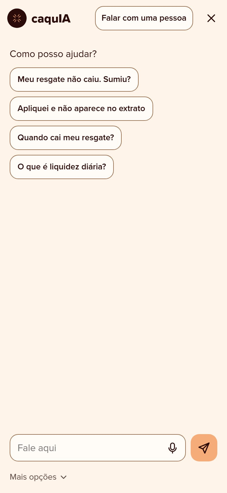
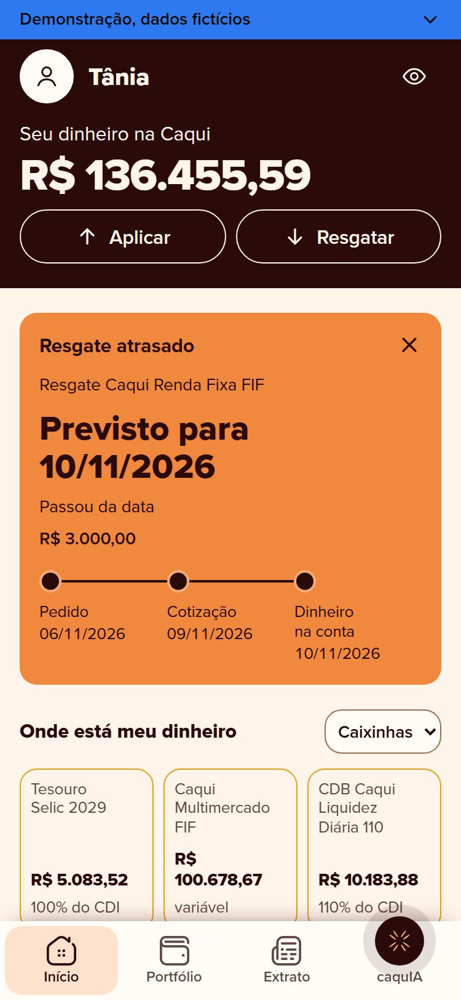
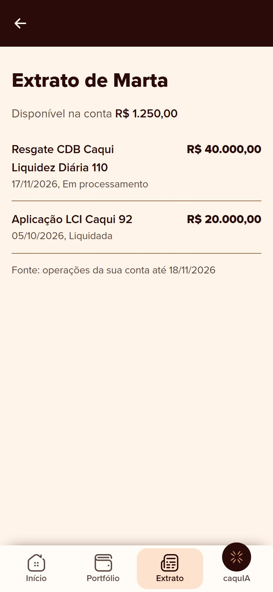
Na conta linear seriam 310 atendentes. Dois terços da demanda precisa ser evitada ou resolvida sem humano.
“Resgatei ontem e não caiu. Sumiu?”
É o maior volume, a maior taxa de recontato e o mais fácil de resolver sem humano, porque a resposta já está nos dados da conta.
A data, com o corte das 16h e o feriado já na conta.
Todo número factual mostra o artigo: KB-006, KB-010, KB-012.
O IR aparece em reais, junto do rendimento.
Visível em qualquer passo. Fora das 8h às 20h, protocolo e prazo.
Quem recebe o caso já vê o histórico e o protocolo.
O desafio: atender 5 vezes mais clientes com um time 1,6 vez maior, sem perder a confiança.
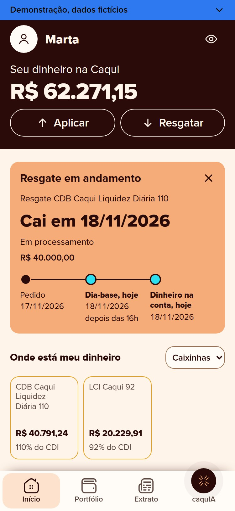
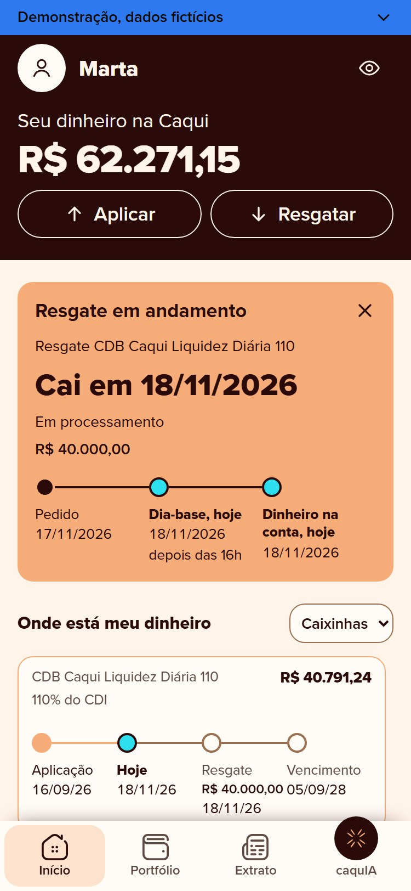
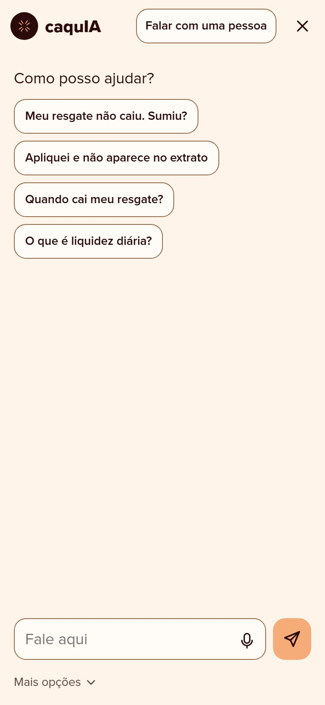
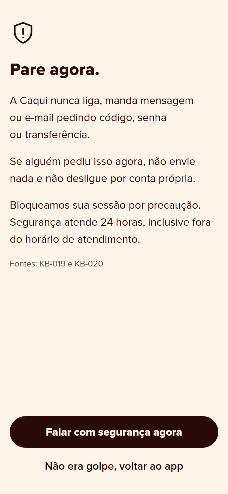
Tratamos o resgate como total: R$ 40.613,21. Os dados diziam R$ 40.000,00 sobre posição de R$ 40.791,24, é parcial.
O IR é proporcional ao rendimento resgatado. É a armadilha da regra 2.
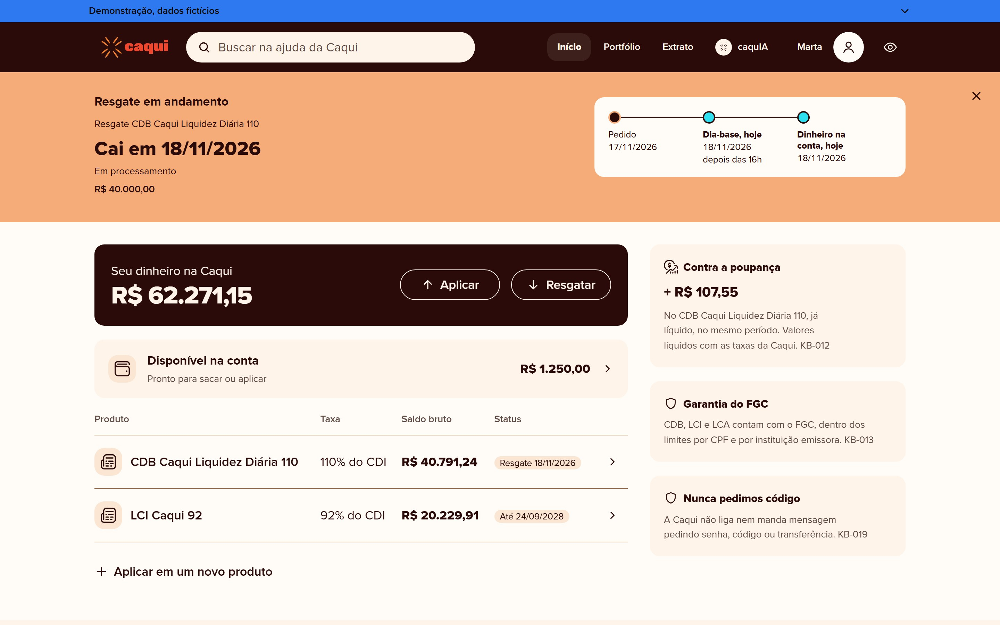
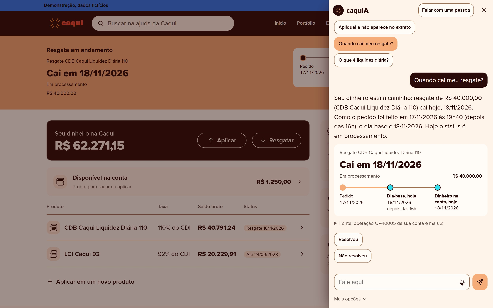
Paleta, tipografia, raio, ícones e as regras de marca. Página em código, com tokens em JSON para os devs.
caqui.pages.dev/design-systemOs 30 artigos cruzados com 8 arquivos de dados, por script. O que sustenta resposta e o que não sustenta.
8 contradições, 11 ambiguidadesPOST /questions e /batch, CPF mascarado antes de enviar e de logar, artigo vigente sobre o obsoleto.
44 casos, 13 regrasNode 22 na frente e FastAPI com Python 3.12 por dentro, no mesmo container do Cloud Run. Modelo compatível com OpenAI, com temperatura 0.
infra/caquia-cloud-runReact e TypeScript na frente, Go e Echo atrás, num container distroless no Cloud Run. Claude com saída em JSON schema.
feature/mvp-copilotoCloudflare Pages com Worker em JavaScript, motor determinístico sem modelo e KV guardando os casos por 48 horas.
feature/atendimento-caquiValida a mensagem, até 100 KB, e chama POST /questions na API interna.
O AnswerWorker mascara CPF no id, no contexto e na pergunta.
Lê os artigos KB na subida e exclui os obsoletos e os substituídos.
Chat completions, com o texto do cliente marcado como dado, nunca como instrução.
Pydantic valida resposta e uma das 6 ações. O registro vai para JSONL.
Limite atual: a API não carrega as posições do cliente. Os painéis da tela usam o motor de demonstração.
Regex de golpe, vulnerável e injeção. Golpe responde sem chamar o modelo.
Só o cliente pedido, com CPF mascarado e prazo e IR já calculados.
Claude com JSON schema, até 2048 tokens, timeout de 30 s e 1 nova tentativa.
Descarta fonte fora do contexto. Sem fonte não responde. Bloqueia recomendação e CPF.
Revisa, edita e aprova antes de disparar. A IA nunca fala direto com o cliente.
O modelo redige, não calcula.
func (s *Servico) Sugerir(ctx context.Context,
idCliente, pergunta string) (Sugestao, error) {
c, err := s.Contexto(idCliente)
// ...
sinais := DetectarSinais(pergunta, c)
if sinais.Golpe {
sug := SugestaoGolpe(s.Base, sinais)
// ...
return sug, nil
}
// ...
cctx, cancel := context.WithTimeout(ctx, TimeoutModelo)
defer cancel()
resp, err := s.Modelo.Gerar(cctx, /* ... */)
// ...
sug, err := BarreiraPos(resp.JSON, c, s.Base,
s.Agora, sinais)
// ...
return sug, nil
}async def answer(self, question):
payload = {
"id": self._mask_cpf(question.id),
"contexto": self._mask_values(question.contexto),
"pergunta": self._mask_cpf(question.pergunta),
}
# ...
completion = await self.client.chat.completions.create(
model=self.model,
**extra,
messages=[...],
)
content = completion.choices[0].message.content
# ...
output = json.loads(content)
answer = AnswerRecord(
id=self._mask_cpf(question.id),
resposta=self._mask_cpf(...),
acao=output["acao"],
)
return answer| Regra | Como o código aplica |
|---|---|
| Corte | Até 16h00 em dia útil conta no dia. Depois disso, ou em dia não útil, vai para o próximo dia útil |
| CDB e LCI | Liquidam no dia-base. LCI só depois da carência de 90 dias |
| Fundo RF | Cotização D+1 e pagamento D+2 úteis a partir do dia-base |
| Tesouro e ações | Tesouro Selic em D+1 útil, ações em D+2 úteis |
| IR | 22,5% até 180 dias, 20% até 360, 17,5% até 720 e 15% depois, só sobre o rendimento |
| Isenção | LCI e LCA não pagam IR |
No Copiloto ficam em internal/regras, em Go. No site, em src/calculo.mjs, em JavaScript.
| Pacote | O que faz |
|---|---|
| cmd/api | Carrega os dados, sobe o HTTP e serve o build do React |
| internal/dados | Lê clientes, posições, operações, conversas e a base para a memória |
| internal/regras | Liquidação, IR e mascaramento em Go puro, sem modelo |
| internal/sugestao | Monta o contexto, chama a Claude API e aplica as barreiras |
| internal/api | Handlers JSON, limite de 10 sugestões por minuto por IP, e erros |
| internal/disparos | Grava em JSONL as mensagens aprovadas, até 5 MB |
Rotas: GET /api/saude, GET /api/clientes, GET /api/clientes/:id/contexto, POST /api/sugestoes e POST /api/disparos.
go test em 5 pacotes e 13 testes no Vitest. Avaliação real com a API: 27 de 29, aprovado com ressalvas.
O runner manda os 45 casos para a API e roda o checker. Pista de texto não prova que a resposta está certa.
19 testes do motor e 40 de 40 perguntas nas pistas, com as respostas lidas.
Revisão sem achado crítico. CI com gofmt, go vet, govulncheck, npm audit e docker build.
Fontes: código das branches citadas, QA_report.md e SEC_report.md.
O KB-006 bateu com as 237 operações que têm liquidação prevista: zero divergência. Os problemas estão fora dele.
KB-019 manda falar com a segurança pelo app. KB-020 bloqueia a sessão em todos os aparelhos. KB-021 exige biometria para voltar. 11 dos 50 clientes preferem telefone, a Dona Marta entre eles.
KB-025 diz “a partir das 8h”. KB-026 diz “até 7 dias corridos”. “Urgente” não é definido em lugar nenhum.
KB-010 não diz se a contagem termina no pedido, no dia-base ou na liquidação. Na borda 180/181 isso muda a alíquota.
7 posições e 15 operações do CDB 110 em clientes diretos, a mais antiga de 20/05/2024, dois anos antes do primeiro cliente da parceria. E 15 aplicações abaixo do mínimo.
“Obedecer ao pedido antigo depois de uma interrupção de segurança é falha de prioridade, não de conteúdo.”
Nenhum dos três apareceu lendo a resposta. Apareceram conferindo contra a fonte: o checker caso a caso, o operacoes.csv e o estilo.css.
| Item | Design system | Telas |
|---|---|---|
| Tipografia | Proxima Nova, Montserrat de reserva | Fraunces nas manchetes, resolvido nesta apresentação |
| Logo | Só na abertura; dentro ficam as sementes | Wordmark em todo header e símbolo no FAB de 17 telas |
| Raio | 14px fixo | Escala 12 / 16 / 20 / total |
| Nome do chat | caquIA | “Ajuda da Caqui” |
| Faixa de status | Cinco estados, com botão de fechar | Quatro estados, sem fechar, falta “recusado” |
A tipografia já foi resolvida: esta apresentação roda no KV do Renan. As outras quatro precisam de uma decisão só antes do deploy.
caqui.pages.devavenue-community/caqui-invest31/10/2026